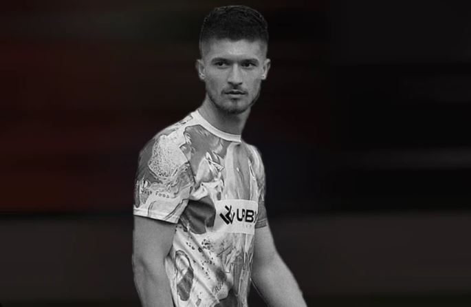

Kush eshte Erjon Morina?
Erjon Morina, një talent i ri dhe i pasionuar i futbollit kosovar, ndërroi jetë më 12 dhjetor 2024, në moshën 22-vjeçare, pas një sulmi kardiak gjatë një seance stërvitore me ekipin e tij të fundit, FC Vushtrria.
Erjon Morina, një talent i ri dhe i pasionuar i futbollit kosovar, ndërroi jetë më 12 dhjetor 2024, në moshën 22-vjeçare, pas një sulmi kardiak gjatë një seance stërvitore me ekipin e tij të fundit, FC Vushtrria.
Erjoni Morina mbetet i gjallë në zemrat e të gjithë atyre që e njohën dhe ndoqën rrugëtimin e tij — një lojtar me pasion dhe energji që lupoi për ëndrrat e tij deri në fund. Ai do të kujtohet gjithmonë si "ylli që ndriçon".
